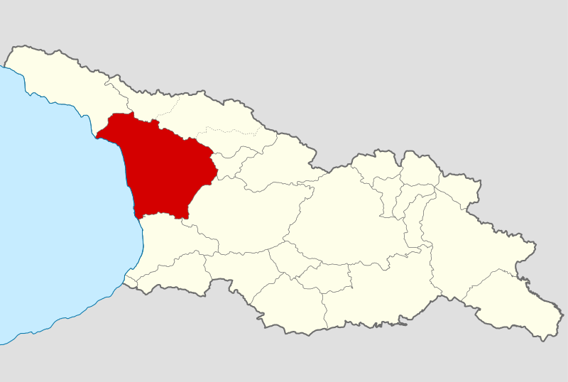

ახალი წელი სამეგრელოში

სამეგრელოში ახალი წლის პირველ დღეს „კალანდა“ ეწოდება და მას თოფების სროლით ეგებებიან.
სამეგრელოში ახალ წელს დილაადრიან ოჯახის უხუცესი მამაკაცი, ხელში მორთული ჩიჩილაკით და ღომის მარცვლიანი ჯამით, რომელზეც კვერცხი დევს, სახლიდან გარეთ გადის ახალი წლის მოსალოცად. გარკვეული რიტუალის შესრულების შემდეგ სახლში შემოდის, ჩიჩილაკს კუთხეში მიაყუდებს, ჯამს იქვე მიუდგამს და თვითონ საახალწლო ტაბლას მიუჯდება, რომელზეც ალაგია: ღორის თავი, ხილი და სხვ. საუზმის დაწყებამდე მეკვლე ოჯახის ყველა წევრს ტკბილეულით უმასპინძლდება.

სამეგრელოში ყველაზე დიდ დღესასწაულად კალანდა — ახალი წელი ითვლებოდა. შინ, გამოსაჩენ ადგილას, დადგამდნენ ბროწეულით, ხილით, ტკბილეულით, ძვირფასი ნივთებით, აბრეშუმის ძაფით, სუროსა და დაფნის ტოტებით მორთულ ჩიჩილაკს. აცხობდნენ ბასილას და ღვეზელს, რომელშიც კვერცხის გულს დებდნენ. დილით ადრე სოფელში თოფის სროლა ატყდებოდა. ოჯახის უფროსი სანოვაგით სავსე ხონჩას აიღებდა, სახლს ლოცვით სამჯერ შემოუვლიდა, ღომის მარცვლებს აბნევდა და ღმერთს გამარჯვებას, ჯანმრთელობასა და კარგ მოსავალს სთხოვდა. შემდეგ შინ შევიდოდა და ყველას მიულოცავდა.